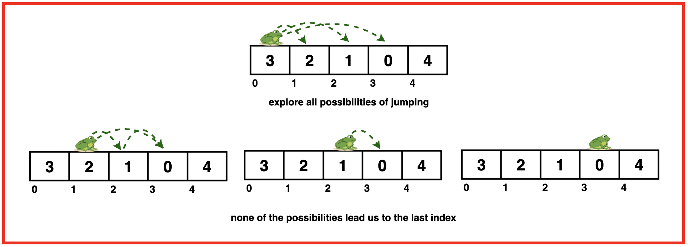
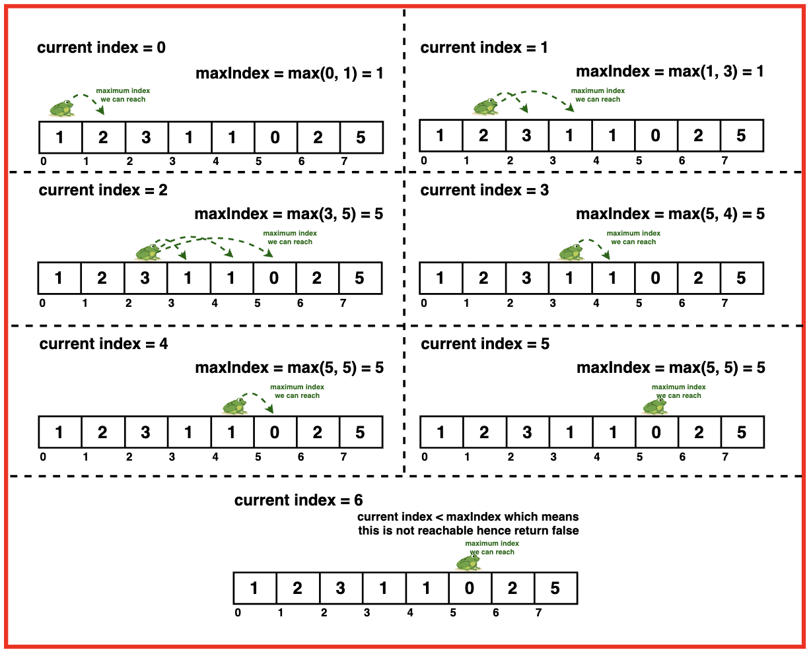

Problem Statement: Given an array where each element represents the maximum number of steps you can jump forward from that element, return true if we can reach the last index starting from the first index. Otherwise, return false.
Examples
Example 1:Input:nums = [2, 3, 1, 0, 4]
Output: TrueExplanation:
We start at index 0, with value 2 this means we can jump to index 1 or 2.
From index 1, with value 3, we can jump to index 2, 3, or 4. However, if we jump to index 2 with value 1, we can only jump to index 3.
So we jump to index 1 then index 4 reaching the end of the array.
We start at index 0, with value 3 which means we can jump to index 1, 2, or 3.
From index 1, with value 2 we can only jump to index 2 or 3.
From index 2, with value 1 we can only jump to index 3.
From index 3, with value 0 we cannot jump any further.
Hence, from all possibilities we are unable to jump to the last index so we return false.
Disclaimer: Don’t jump directly to the solution, try it out
yourself first.
Optimal Approach
Algorithm / Intuition
A greedy algorithm makes a series of choices, each of which looks the best at the moment, with the hope that these local optimizations will lead to a globally optimal solution. The key idea is to make the best possible choice at each step without considering the overall problem.
For this problem, we keep track of the farthest position we can reach at any point in time. We iterate over the array and keep making the greedy choice of reaching the farthest by comparing if the current index can be reached by the previous indices or not.
If we reach an index that is beyond the farthest position we can reach, we return false. Else, we keep updating the farthest position with the maximum index we can reach from the current index.
Algorithm:
Step 1:Initialise a variable maxIndex to keep track of the farthest index we can reach from the start
Step 2: Iterate through each index of the array and at each interaction check if the current index is greater than the maximum index we can reach so far.
Step 3:
If the current index is greater than maxIndex, it means the current index is not reachable hence we return false.

Step 4: But if current index is reachable we update the maxIndex to be the maximum of the current value of maxIndex and maximum index we can reach from current index ie. i + nums[i].
Step 5: If we exit the loop without returning false, it means we have reached the last index, therefore we can return a true.
Code
#include <vector>
#include <algorithm>
#include <iostream>
using namespace std;
// Function to determine if
// you can reach the last index
bool canJump(vector<int>& nums) {
// Initialize the maximum
// index that can be reached
int maxIndex = 0;
// Iterate through each
// index of the array
for(int i = 0; i < nums.size(); i++){
// If the current index is greater
// than the maximum reachable index
// it means we cannot move forward
// and should return false
if (i > maxIndex){
return false;
}
// Update the maximum index
// that can be reached by comparing
// the current maxIndex with the sum of
// the current index and the
// maximum jump from that index
maxIndex = max(maxIndex, i + nums[i]);
}
// If we complete the loop,
//it means we can reach the
// last index
return true;
}
int main() {
vector<int> nums = {4, 3, 7, 1, 2};
cout << "Array representing maximum jump from each index: ";
for(int i = 0; i < nums.size(); i++){
cout << nums[i] << " ";
}
cout << endl;
bool ans = canJump(nums);
if (ans) {
cout << "It is possible to reach the last index." << endl;
} else {
cout << "It is not possible to reach the last index." << endl;
}
return 0;
}
import java.util.*;
public class Main {
// Function to determine if
// you can reach the last index
public static boolean canJump(int[] nums) {
// Initialize the maximum
// index that can be reached
int maxIndex = 0;
// Iterate through each
// index of the array
for (int i = 0; i < nums.length; i++) {
// If the current index is greater
// than the maximum reachable index
// it means we cannot move forward
// and should return false
if (i > maxIndex) {
return false;
}
// Update the maximum index
// that can be reached by comparing
// the current maxIndex with the sum of
// the current index and the
// maximum jump from that index
maxIndex = Math.max(maxIndex, i + nums[i]);
}
// If we complete the loop,
// it means we can reach the
// last index
return true;
}
public static void main(String[] args) {
int[] nums = {4, 3, 7, 1, 2};
System.out.print("Array representing maximum jump from each index: ");
for (int i = 0; i < nums.length; i++) {
System.out.print(nums[i] + " ");
}
System.out.println();
boolean ans = canJump(nums);
if (ans) {
System.out.println("It is possible to reach the last index.");
} else {
System.out.println("It is not possible to reach the last index.");
}
}
}
def can_jump(nums):
# Initialize the maximum
# index that can be reached
max_index = 0
# Iterate through each
# index of the array
for i in range(len(nums)):
# If the current index is greater
# than the maximum reachable index
# it means we cannot move forward
# and should return false
if i > max_index:
return False
# Update the maximum index
# that can be reached by comparing
# the current max_index with the sum of
# the current index and the
# maximum jump from that index
max_index = max(max_index, i + nums[i])
# If we complete the loop,
# it means we can reach the
# last index
return True
def main():
nums = [4, 3, 7, 1, 2]
print("Array representing maximum jump from each index: ", end="")
for i in range(len(nums)):
print(nums[i], end=" ")
print()
ans = can_jump(nums)
if ans:
print("It is possible to reach the last index.")
else:
print("It is not possible to reach the last index.")
if __name__ == "__main__":
main()
function canJump(nums) {
// Initialize the maximum
// index that can be reached
let maxIndex = 0;
// Iterate through each
// index of the array
for (let i = 0; i < nums.length; i++) {
// If the current index is greater
// than the maximum reachable index
// it means we cannot move forward
// and should return false
if (i > maxIndex) {
return false;
}
// Update the maximum index
// that can be reached by comparing
// the current maxIndex with the sum of
// the current index and the
// maximum jump from that index
maxIndex = Math.max(maxIndex, i + nums[i]);
}
// If we complete the loop,
// it means we can reach the
// last index
return true;
}
function main() {
let nums = [4, 3, 7, 1, 2];
console.log("Array representing maximum jump from each index: ");
for (let i = 0; i < nums.length; i++) {
console.log(nums[i] + " ");
}
console.log();
let ans = canJump(nums);
if (ans) {
console.log("It is possible to reach the last index.");
} else {
console.log("It is not possible to reach the last index.");
}
}
main();
Output
Array representing maximum jump from each index: 4 3 7 1 2
It is possible to reach the last index.
Complexity Analysis
Time Complexity: O(N)
where N is the length of the input array. We iterate through the input array exactly once and at each element perform constant time operations.
Space Complexity: O(1) as the algorithm uses only a constant amount of extra space regardless of the size of the input array. It does not require any additional data structures that scale with the input size.
Video Explanation
Special thanks to Gauri Tomar for contributing to this article on takeUforward. If you also wish to share your knowledge with the takeUforward fam, please check out this article